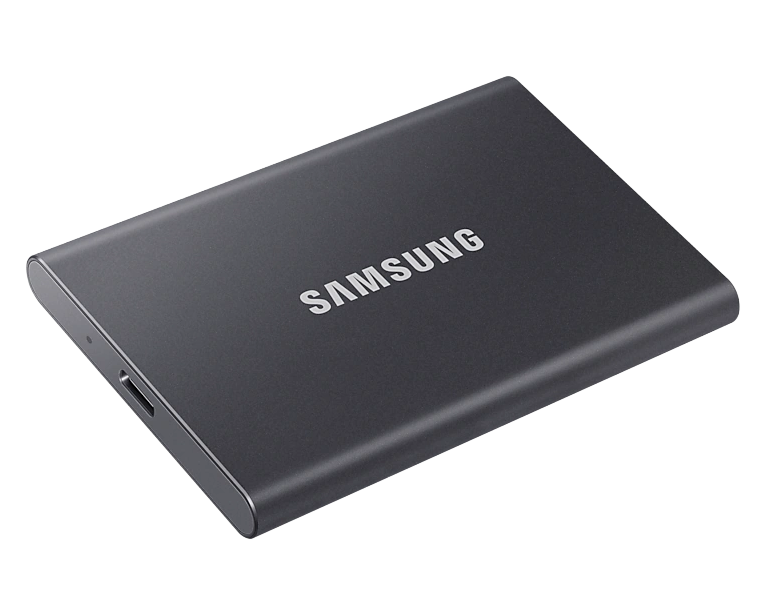
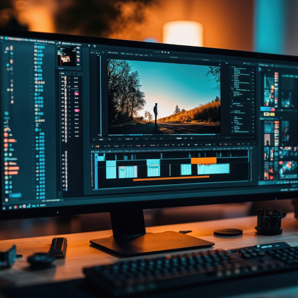
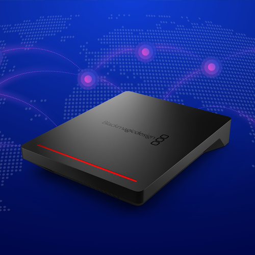
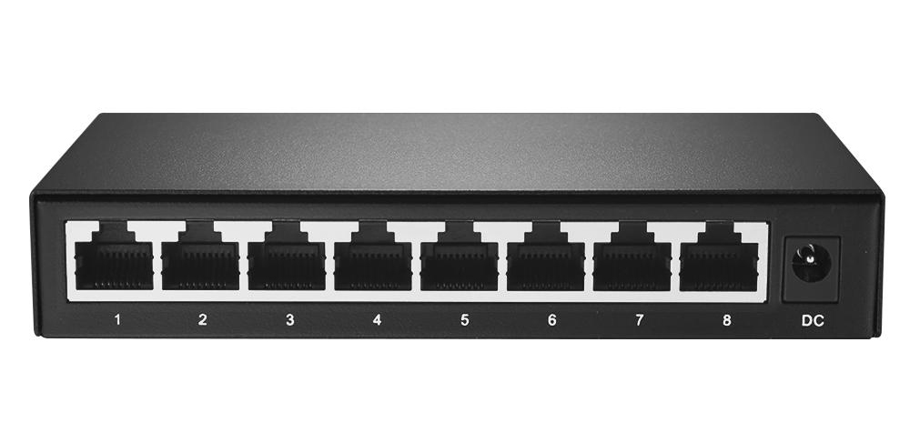

녹화와 파일전송을 한번에
녹화 영상을 실시간 네트워크 공유(NAS보다 빠른 동기화)
클라우드
레코딩 패키지
네트워크 스토리지에 10Gbps 이더넷 속도로 실시간 동기화 기능을 통한 녹화 파일 전송
2,500,000원

레코딩과 편집 동기화
블하TV 유튜브HyperDeck Studio HD Mini
소형 비디오 레코더입니다. 1080p60 해상도까지 SD/HD 포맷으로 녹화가 가능하며, 3G-SDI 입/출력 및 HDMI 출력을 지원합니다. 또한 타임코드 및 레퍼런스 생성기능을 갖추고 있으며, 듀얼 SD 카드 슬롯을 통해 끊김 없이 녹화가 가능합니다. REC
REC
Blackmagic Cloud Pod
모든 USB-C 디스크를 네트워크 스토리지로 즉시 변환하며, 고성능의 10G 이더넷 및 HDMI 상태 모니터링 기능을 지원할 뿐 아니라 Blackmagic Cloud 동기화 기능을 통한 전 세계 파일 전송이 가능합니다.
외장하드 SSD 1TB
USB 3.2 Gen2의 놀라운 전송 속도로 대량의 파일을 단 몇 초 만에 전송할 수 있습니다. 또한 PCIe NVMe 기술이 내장되어 있어 연속 읽기/쓰기 속도가 각각 최대 1,050/1,000 MB/s 속도재고가 없는 경우 다른 브랜드 Sandisk등 동급사양으로 변동 될 수 있습니다.

편리한, 무료 소프트웨어 유틸리티
Blackmagic Cloud Pod을 사용하면 사용자의 네트워크 스토리지 솔루션을 자유롭게 사용자 지정할 수 있어 편리합니다.
기존 방식이랑 뭐가 다른가요?
녹화하고 편집하는 시간이 중요한 편집자분들께서는 데이터를 옮기는 시간에 대부분의 시간을 소비합니다. 새로운 네트워크 녹화 방식은 녹화와 동시에 클라우드로 데이터가 들어오며 곧바로 편집에 들어갈 수 있습니다.기존 레코딩 방식(카메라 3대의 경우)
- 레코딩 시작
- 레코딩 종료 (SD,SSD 회수)
- PC복사 3회
- 편집 시작
- 
→
→
→
클라우드 레코딩 방식
- 레코딩 시작
- 레코딩 종료
(클라우드 팟 저장완료) - 편집 시작
- 
→
→
클라우드 레코딩 구성도
장점) 녹화와 동시에 클라우드팟에 실시간 백업이 가능하며 곧바로 편집을 시작할 수 있습니다
클라우드 서비스를 통해 다른 장소에서 혹은 다수의 인원이 동시에 편집을 시작할 수 있습니다.
편집실
ㄱ

Camera 1
Camera 2(PGM)
Camera 3(Clean Feed)
↓

10Gpbs 네트워크
→


↕
외부접속
PC1
PC2

↔

![]()

Dropbox 및 Google Drive 실시간 동기화 지원
Dropbox 및 Google Drive 계정 정보를 입력하면 Blackmagic Cloud Pod에서 동기화 기능을 사용할 수 있습니다. 블랙매직디자인 클라우드 장치를 추가하면 다른 장소에서 레코딩 데이터를 실시간 동기화됩니다.
클라우드 서비스를 추가하세요

동기화 폴더 설정
동기화 방향 설정


레코딩 후 프록시 파일 자동 생성(옵션)
Blackmagic Cloud Pod은 녹화 후 프록시 파일을 자동으로 생성하여, 편집자가 빠르게 작업을 시작할 수 있도록 도와줍니다. 이 기능은 특히 대용량 비디오 파일을 다룰 때 유용합니다.
다양한 활용도
Reference
 종교시설
종교시설 교육기관
교육기관 대회의실
대회의실 스튜디오
스튜디오


인터페이스
HyperDeck Studio HD Mini

Blackmagic Cloud Pod